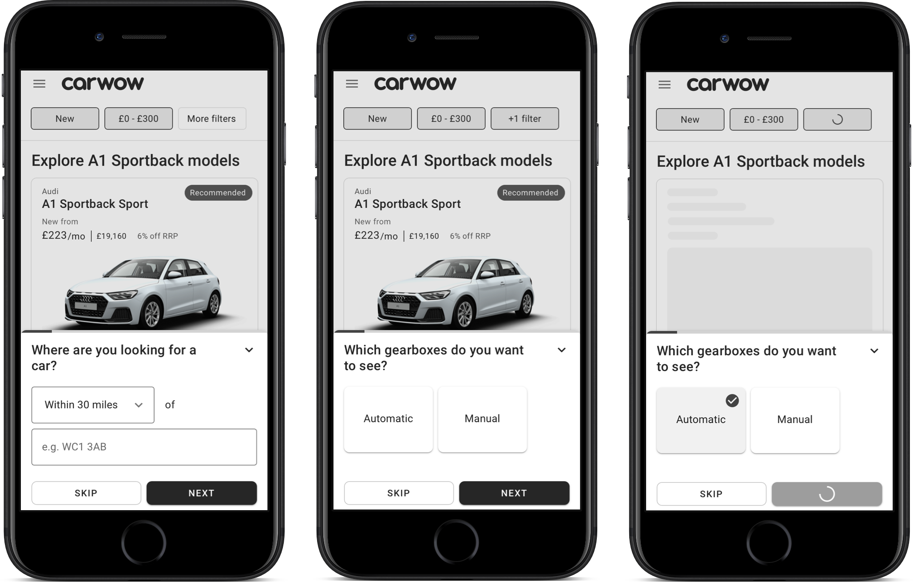
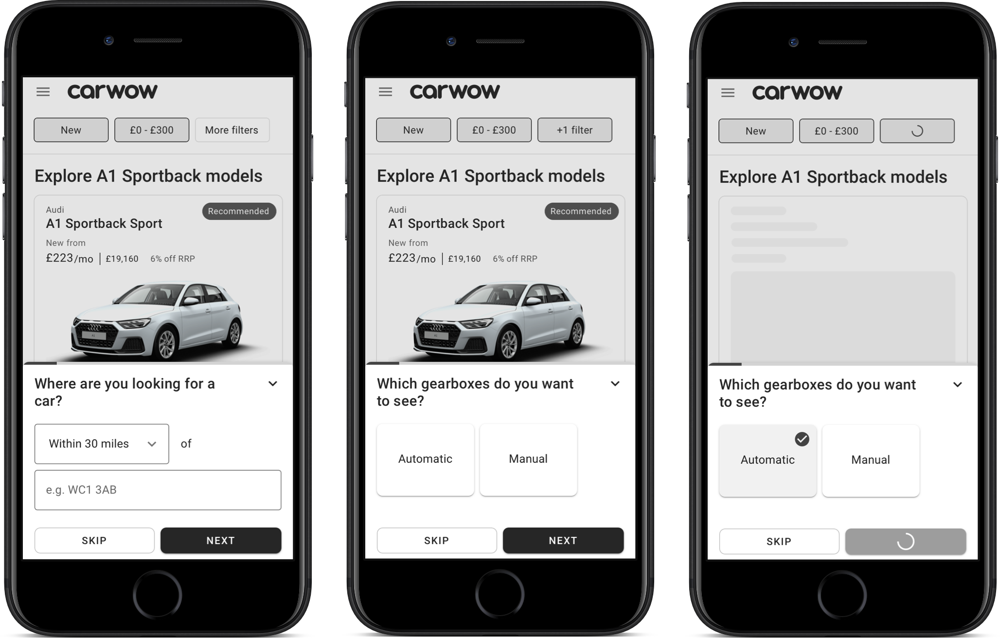
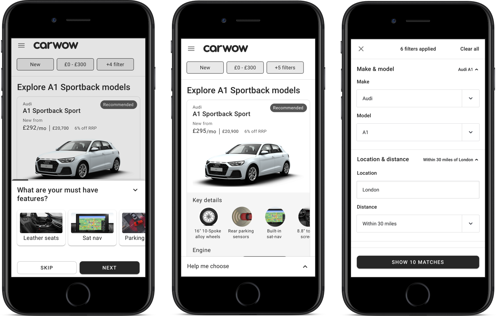
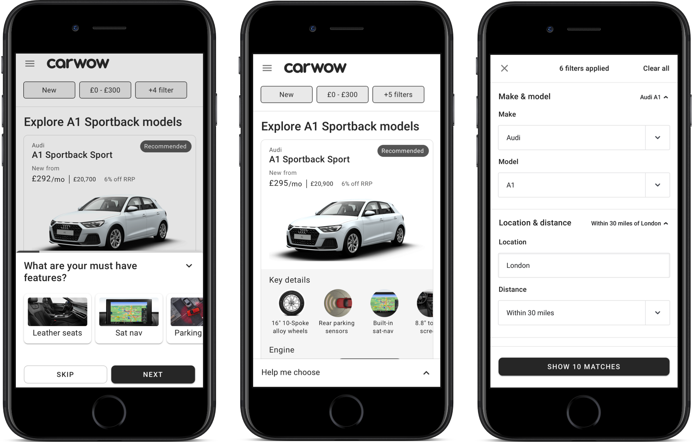

Joining up the carwow user experience.
We were faced with the task of joining up multiple propositions, in a seamless journey, based upon user research & a large data set.
What is JUCE?
A Joined Up Consumer Experience (JUCE), is a concept of how we could support the customer throughout the entire car buying process.
It’s more than just bringing the different parts of our product - like used and leasing - into our core product.
It’s about providing users with the information they need, when they need it, so they can make informed choices. It’s about giving them an advantage they wouldn’t get without carwow.
The outcome
See what we built, before viewing the process as to how we got there:


Who & Why?
JUCE will affect every single one of our customers (in a positive way!). Currently, the customer journey through the carwow site varies hugely depending on:
- The entry point to carwow
- Payment method (cash, finance, leasing)
- Whether the car is a ‘factory order’, ‘stock’, ‘nearly new’ or ‘used’
By unifying this process and removing discrimination based on the above factors, we hope that the journey will become clearer and more seamless for customers.
The customer journey maps
We started at the beginning, stripping things right back to the core of our business model. Looking at the generic car buying journey, with the assistance of multiple sources of research, we were able to compile a customer journey map.
The car buying journey


How might we statements
- How might we send users down the right path?
- How might we help a user select the right car?
- How might we surface unconsidered, smarter options?
- How might we help the user understand jargon and technical terms?
- How might we educate users about buying options?
- How might we help the user calculate the affordability of their purchase?
Discovery phase
Throughout this section the JUCE teams individually, as well as collaboratively, came together to view and discuss the output of the past two week's discovery work.
With the goal to build a shared understanding of the proposed flow options in order to take the next steps to build, test and iterate the journey that forms the backbone of JUCE.
During this phase, it was evident themes were emerging of areas where both user feedback and the study of our core journey flows had identified as needing improvement or indeed complete discovery.
The design sprint
Having identified these key discovery areas, it was evident that not all could be tackled imminently (before Christmas 2018).
We would be focussing on customers who had a make/model in mind but needed help in firstly understanding the different derivates (trim and engine options) and then making a decision on which options would be best for them.

 

 

The hypotheses
- Users will want to engage with the discovery tool and will understand how it could help them in their search.
- Users will understand what the price includes understand that it changes with their preferences.
- Users will realise why a car is being recommended to them after selecting preferences.
Design outcomes
- Provide users with more guidance at the beginning of the discovery tool.
- Make the discovery tool less intrusive.
- Feedback on how postcode is being used in results.
- Change ‘total cost’ to ‘cash’.
- Make it clearer that users can select multiple answers in the discovery tool.
- Include a sign-up page to start gathering feedback on this.